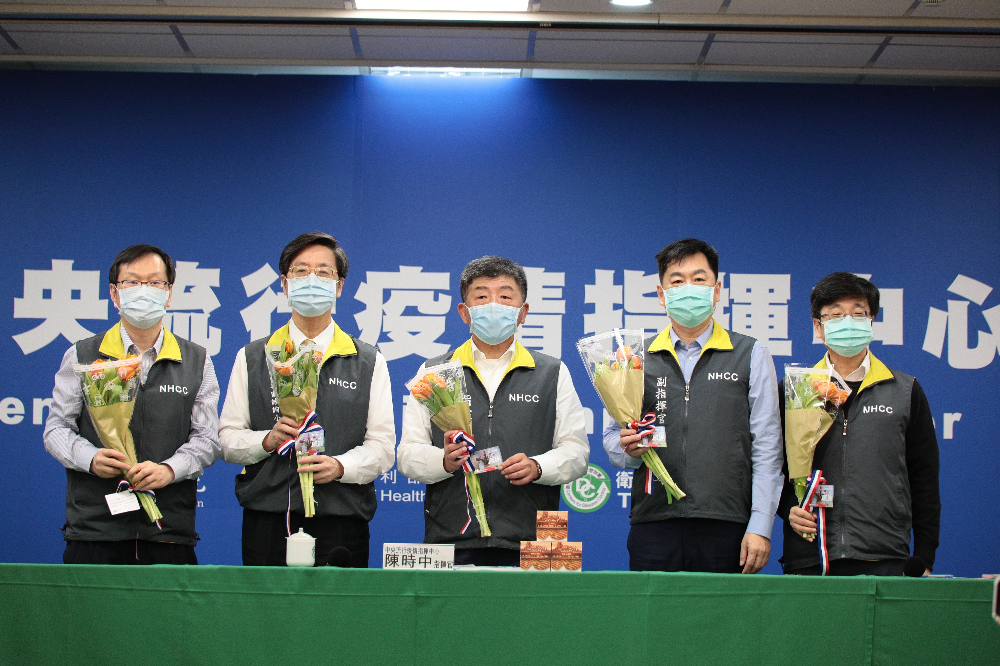
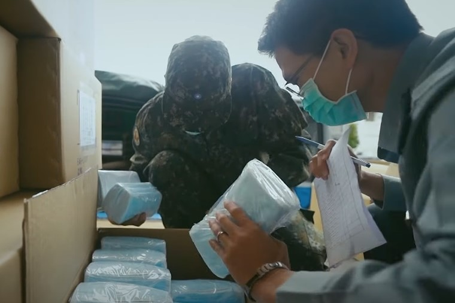

防疫
成功防疫關鍵
台灣成功擋下病毒威脅的關鍵
活用SARS經驗
2003年SARS重創台灣
政府記取當時的經驗，透過「法規檢討」、「組織調整」及「落實實務運作」，達成防疫成效最大化。
疫情中心指揮官統一指揮、督導及協調各級政府機關、公營事業及民間組織執行防疫工作。
中央疫情指揮中心
- 以「情報、作戰、後勤」3大範疇，下設10個執行分組進行各項防疫作為。
- 成立專家諮詢小組，邀集專家學者研議醫療及防疫專業技術面建議。
- 設立研發組，有助防疫科技研發工作與一線防疫作為密切配合。

資訊公開透明
- 每日即時發布新聞稿及召開記者會，建立透明的媒體溝通平臺。
- 透過社群軟體，即時發布最新政策與澄清不實資訊。
- 設計各種防疫的衛教宣導，於不同管道露出。
- 針對外籍人士，提供多國語言版本文宣及影片。

良好的資源分配
- 盤點調度防疫物資，以應醫用及民生需要。
- 政府徵用口罩並合理分配，推出口罩實名制以供一般民眾所需。
- 協調及媒合防疫物資，優先提供醫療機構使用。
- 因應疫情發展之病患收治需要，規劃整備策略以擴大收治病患。
防堵中國疫情
- 在中國疫情資訊未明之初，隨即於2019年12月31日召開臨時記者會說明武漢市疫情。
- 2019年12月31日起對武漢直航入境班機進行登機檢疫。
- 2020年1月26日陸續禁止湖北、廣東及溫州人士入境。2月11日已全面禁止中港澳人士入境。

及時邊境管制
- 及時監測國際疫情並滾動調整旅遊疫情建議。
- 2020年3月21日提升全球旅遊疫情建議為第三級（警告）。
- 因應疫情進入全球大流行，3月19日起禁止外籍旅客來臺。
- 3月24日起禁止外籍旅客來臺轉機，並採取全面入境管制。

智慧社區防疫
- 對旅遊史亦或接觸史的民眾於健保雲端查詢系統加註資訊。
- 醫護人員可利用雲端查詢系統，並根據其相關症狀，研判是否為疑似感染者，以迅速採行措施。
- 建置「入境檢疫系統」，要求入境者線上填寫健康聲明書等資料。
- 整合旅客資料至「防疫追蹤系統」及「電子圍籬系統」，以確實掌握相關人員行蹤。
先進的醫療科技
- 成立專案團隊，全力輔助國內防疫所需檢驗試劑研發。
- 利用在SARS疫情期間所篩選出的抗體開發出快篩試劑，約15分鐘可完成檢測。
- 收集病人相關檢體及臨床資料至整合平台，提供產、學、研醫界申請使用，加速整體防疫研究。
- 運用4種技術平台進行開發疫苗，可望於2020年底進入臨床試驗。
優質國民
臺灣社會具備足夠的防疫素養，民眾多已了解戴口罩與勤洗手的重要性，並主動配合政府政策與措施，大幅提升政策效益。
民眾良善且熱於互助，於網路上自行發起「我OK，你先領」，主動將口罩留給最需要的國民。
「臺灣模式防疫」，主要秉持禦敵從嚴、料敵從寬的態度，務實面對疫情挑戰。
{kind=link}
{kind=link}
{kind=link}
{kind=link}
{kind=link}
{kind=link}
{kind=link}
{kind=link}